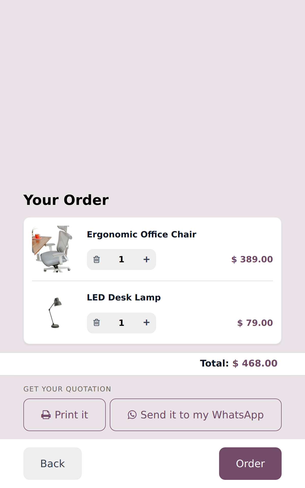
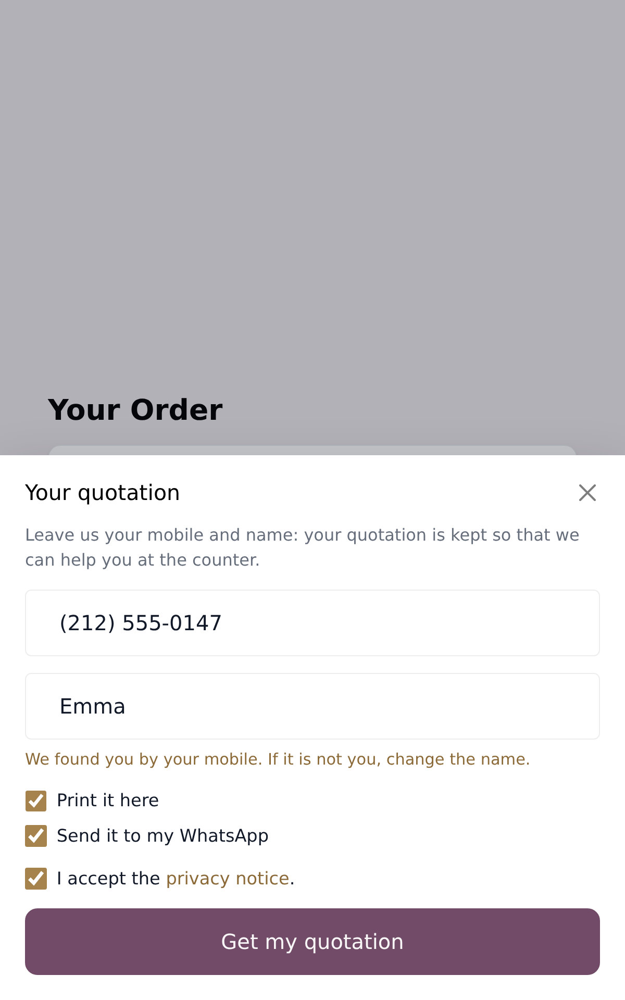
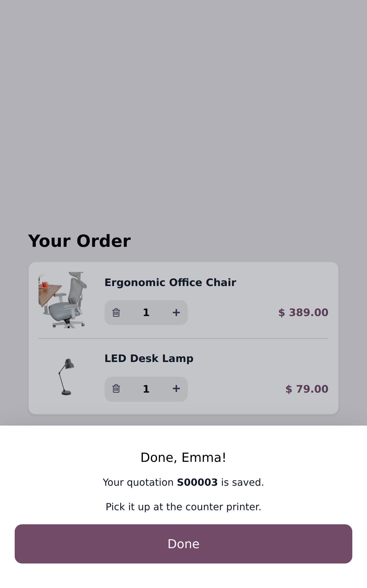
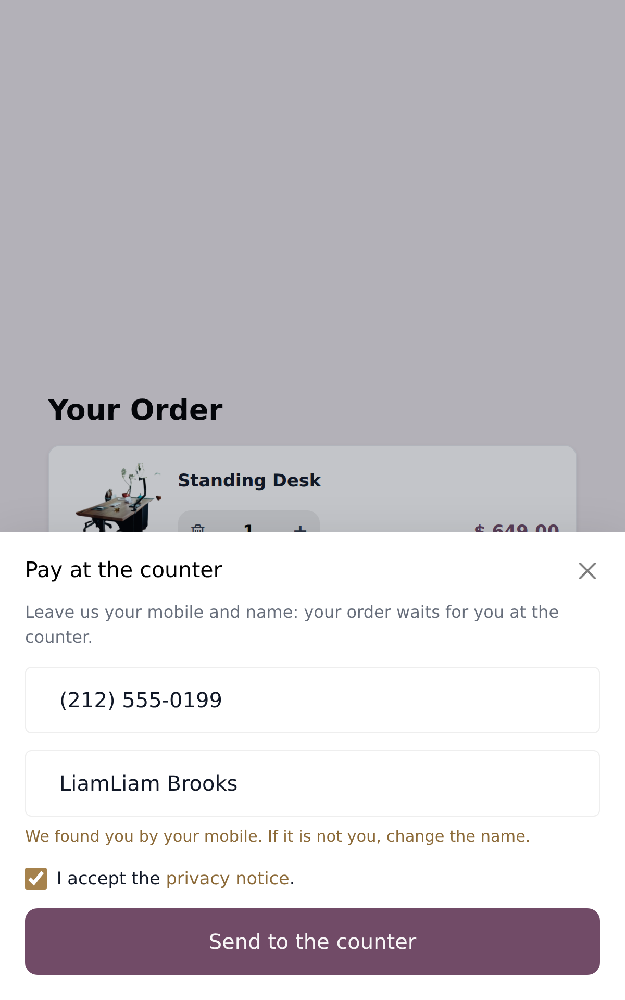
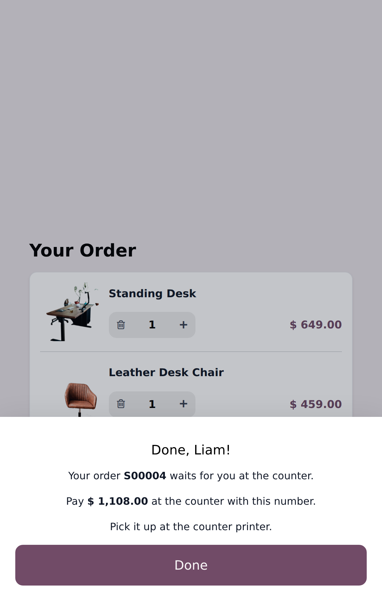
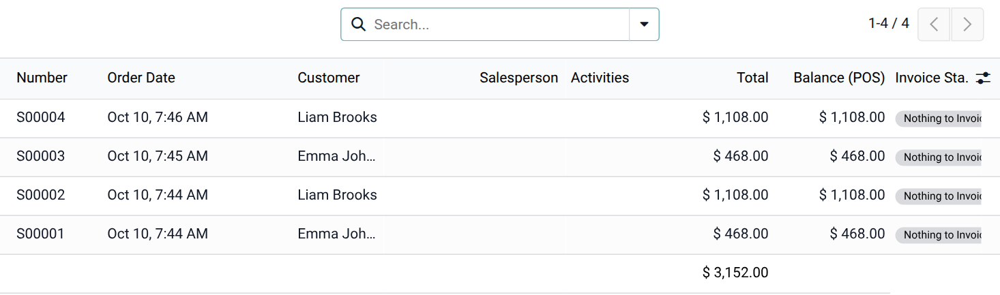
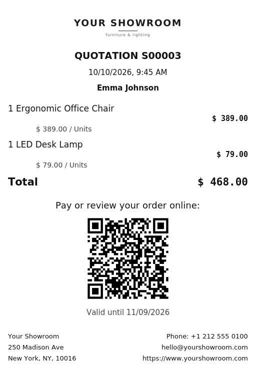
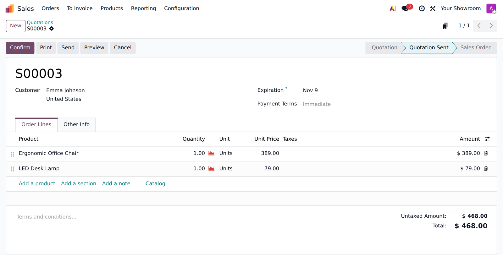
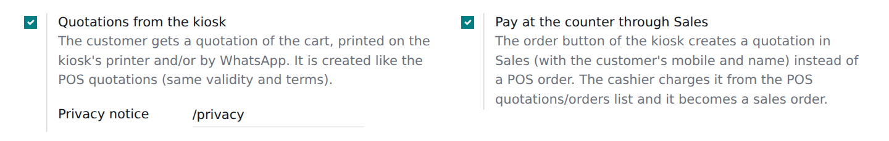

Furniture, jewelry, eyewear, appliances: big-ticket items are rarely bought on the first visit. With the Odoo kiosk the customer can browse and build a cart, but the cart is lost the moment they walk away.
This module turns the cart into a real quotation the customer takes with them — and you keep the lead: their name, their mobile and exactly what they liked.
The quotation is made with the same engine as Sales, Quotations & Layaway from POS: same validity, terms and template, prices from the kiosk's price list. It shows up in Sales and in the POS list of orders, ready for the cashier to collect a down payment or close the sale.

1. In the cart: Print it or Send it to my WhatsApp.

2. Mobile first: a returning customer gets their name filled in. Then your privacy notice; both channels can be chosen.

3. Done: the quotation number, and the kiosk goes back to its start screen.
Switch it on and the kiosk's order button sends the cart to Sales as a quotation instead of a POS order. The cashier finds it in the POS Quotation/Order list, collects the payment (or a down payment) and Odoo confirms it as a sales order — the same flow as your POS quotations and layaways.

The customer leaves their mobile and name.

They get the number and the amount to pay at the counter.

The cashier charges it from the POS list; once paid it becomes a sales order.

Your logo, the products, the total, the validity date and a QR code to review or pay the quotation online. The same image is sent with your approved WhatsApp quotation template.

The customer is found by their mobile (no duplicates) or created. No salesperson is set until someone takes the lead.
Point of Sale › Settings › your kiosk › Mobile self-order & Kiosk › tick Quotations from the kiosk and, optionally, the link to your privacy notice. Tick Pay at the counter through Sales if the order button should create quotations too.
To print, set the kiosk's ePOS printer (IP) in the same settings. To send by WhatsApp, set the approved quotation template of Sales, Quotations & Layaway from POS - WhatsApp.

Odoo 19 Enterprise (WhatsApp) · Point of Sale with the self-order kiosk · Sales, Quotations & Layaway from POS and its free WhatsApp add-on (XUBAX).
Questions or a change you need? Write to soporte@xubax.com — XUBAX.